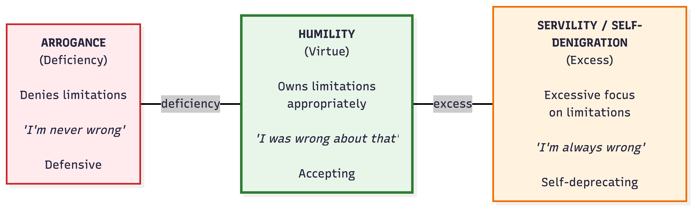
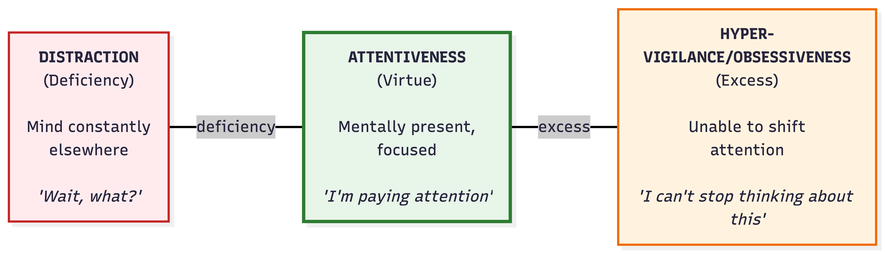
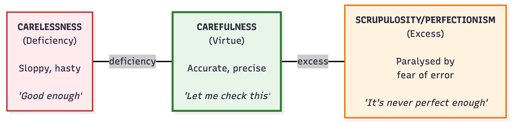
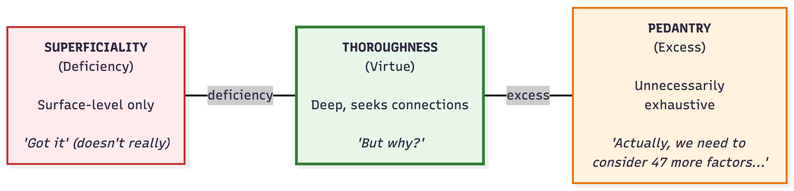
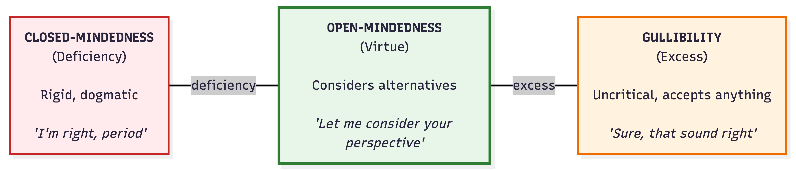
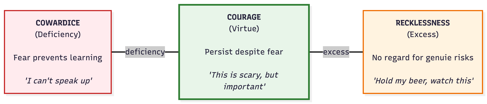
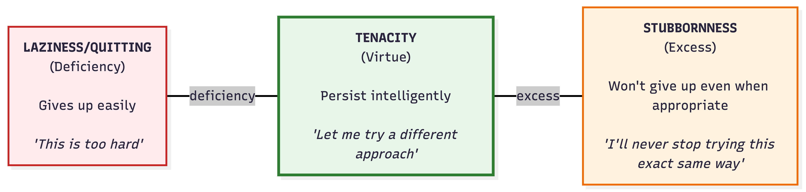

Deficiency / Virtue / Excess
Understanding Intellectual Virtues Through Balance
Intellectual virtues exist on a spectrum. This framework, rooted in Aristotelian virtue ethics, helps us understand that virtues represent a balanced middle ground between two extremes: deficiency (too little) and excess (too much).
LEARNING INITIATORS
Curiosity

Apathy (Deficiency)
- Shows no interest in learning or understanding
- Asks no questions, even when confused
- Treats learning as a chore
- "Whatever, I don't really care"
Example: A student who never wonders about anything beyond what's required for a grade
Curiosity (Virtue)
- Asks thoughtful, well-timed questions
- Driven by genuine desire to understand
- Knows when to stop asking questions
- Pursues worthwhile subjects, not trivial matters
Example: A learner who asks "Why does this work this way?" and follows up with deeper questions
Nosiness (Excess)
- Asks questions that invade privacy or boundaries
- Pursues trivial or salacious information
- Questions relentlessly without regard for context
- Driven by gossip rather than genuine understanding
Example: Someone who constantly asks "How much did that cost?" or pries into personal matters
Autonomy

Conformity/Dependence (Deficiency)
- Cannot form independent judgments
- Simply mirrors others' beliefs
- Constantly asks "What should I think about this?"
- Lacks confidence in own reasoning
Example: A person who changes their opinion based on whoever spoke last
Autonomy (Virtue)
- Forms own judgments and conclusions
- Uses evidence and reasoning independently
- Remains appropriately responsive to expert guidance
- Balances independence with openness to input
Example: A thinker who develops their own perspective but welcomes critique and evidence
Dogmatism (Excess)
- Refuses to consider others' input or expertise
- Overly confident in own reasoning
- Believes they can figure everything out alone
- Dismisses legitimate authority or expertise
Example: Someone who rejects expert scientific consensus because "I've done my own research"
Humility

Arrogance (Deficiency)
- Refuses to admit limitations or mistakes
- Defensive when errors are pointed out
- Believes oneself intellectually superior
- Obsessed with appearing smart
Example: A person who can never say "I don't know" and makes up answers instead
Humility (Virtue)
- Aware of and accepts own intellectual limitations
- Admits mistakes without shame
- Open to learning from others
- Neither hides nor obsesses over limitations
Example: A learner who can say "I made a mistake there, thanks for pointing it out"
Servility/Self-Denigration (Excess)
- Constantly focuses on own limitations
- Assumes oneself less capable than one is
- Defers excessively to others
- "I'm not smart enough to understand this"
Example: A competent student who constantly says "I'm terrible at this" despite evidence otherwise
LEARNING MAINTAINERS
Attentiveness

Distraction (Deficiency)
- Mind constantly wanders
- Not mentally present during learning
- Easily pulled away by any distraction
- Misses important details and connections
Example: A student who can't recall what was just discussed because they were thinking about other things
Attentiveness (Virtue)
- Mentally present and focused
- Notices important details
- Can concentrate on essential matters
- Knows when to shift attention appropriately
Example: A learner who is fully engaged in the moment, notices subtle patterns and connections
Hyper-vigilance/Obsessiveness (Excess)
- Cannot stop focusing on a single thing
- Notices everything, unable to filter what's important
- Gets stuck on irrelevant details
- Paralyzed by overthinking
Example: Someone who fixates on one minor error and can't move forward with their work
Carefulness

Carelessness (Deficiency)
- Makes avoidable errors through sloppiness
- Doesn't check work for mistakes
- Rushes to conclusions
- "Good enough" mentality without pursuing accuracy
Example: A student who submits work without proofreading, filled with obvious errors
Carefulness (Virtue)
- Strives for accuracy and precision
- Checks work for errors
- Avoids hasty conclusions
- Gets things right without becoming paralyzed
Example: A thinker who reviews their reasoning carefully but knows when work is ready
Scrupulosity/Perfectionism (Excess)
- Obsesses over potential errors
- Never satisfied that work is "good enough"
- Paralyzed by fear of making mistakes
- Procrastinates due to perfectionism
Example: Someone who rewrites the same paragraph 20 times and never completes their project
Thoroughness

Superficiality (Deficiency)
- Satisfied with surface-level understanding
- Doesn't probe for deeper meaning
- Fails to make connections between ideas
- Cannot explain what they claim to know
Example: A "mere regurgitator" who can repeat facts but can't explain them
Thoroughness (Virtue)
- Investigates topics in depth
- Explores connections between ideas
- Seeks comprehensive understanding
- Can explain clearly in multiple ways
Example: A learner who doesn't just know the formula but understands why it works
Pedantry (Excess)
- Insists on exhaustive detail in inappropriate contexts
- Cannot distinguish important from trivial points
- Bogs down in minutiae
- Makes simple things unnecessarily complex
Example: Someone who interrupts every conversation with "Well, actually..." and obscure trivia
OBSTACLE OVERCOMERS
Open-mindedness

Closed-Mindedness (Deficiency)
- Refuses to consider alternative viewpoints
- Rigid, inflexible thinking
- Dismisses opposing views without consideration
- "I've made up my mind, don't confuse me with facts"
Example: Someone who won't even listen to perspectives that differ from their own
Open-Mindedness (Virtue)
- Willing to consider alternative perspectives fairly
- Can switch viewpoints while maintaining own convictions
- Gives opposing views honest hearing
- Knows when to stop considering alternatives
Example: A thinker who seriously engages with views they disagree with before deciding
Gullibility (Excess)
- Accepts any claim without critical evaluation
- No stable convictions
- Cannot distinguish credible from incredible sources
- Changes mind based on whoever spoke last
Example: Someone who believes every conspiracy theory they encounter because they're "open-minded"
Courage

Cowardice (Deficiency)
- Paralyzed by fear in intellectual contexts
- Won't speak up even when having valuable insights
- Avoids intellectual risks at all costs
- Silenced by fear of being wrong or looking foolish
Example: A student who never raises their hand despite having thoughtful questions
Courage (Virtue)
- Persists in inquiry despite fear or discomfort
- Willing to ask difficult questions
- Speaks up when appropriate despite social risk
- Manages fear rather than being controlled by it
Example: Someone who shares a controversial but well-reasoned view in a hostile environment
Recklessness (Excess)
- No appropriate caution in intellectual matters
- Speaks without thinking
- Takes foolish intellectual risks
- Confuses recklessness with courage
Example: Someone who loudly proclaims expertise in areas they know nothing about
Tenacity

Laziness/Quick Quitting (Deficiency)
- Gives up at first sign of difficulty
- No persistence through intellectual challenges
- Avoids anything requiring sustained effort
- "This is too hard, I quit"
Example: A student who abandons a problem after one failed attempt
Tenacity (Virtue)
- Perseveres through intellectual difficulties
- Adjusts approach when struggling
- Embraces intellectual challenges
- Knows when giving up is actually appropriate
Example: A learner who tries multiple strategies when stuck, learning from each failure
Stubbornness (Excess)
- Persists with failed approaches
- Won't give up even when it's clearly not working
- Cannot recognize when to move on
- Confuses tenacity with inflexibility
Example: Someone who keeps using the same failed method, refusing to try anything different
Using These Scales in Teaching
For Self-Reflection
Ask students: "Where do you tend to fall on each scale? Which extremes do you lean toward?"
For Feedback
Instead of saying "You need more curiosity," say "I noticed you might be leaning toward intellectual apathy here—what questions might you ask?"
For Goal-Setting
"This semester, I'm working on moving from intellectual cowardice toward courage, while making sure I don't become reckless."
For Normalization
These scales show that everyone struggles—we all tend toward one extreme or another at different times. The virtue is the ongoing practice of finding balance.